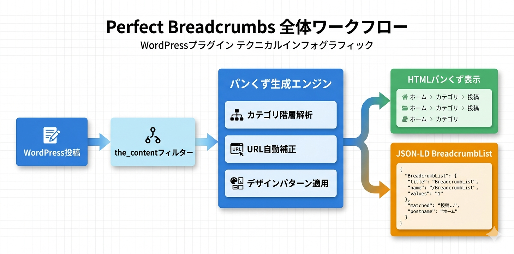

Kashiwazaki SEO Perfect Breadcrumbs マニュアル

Kashiwazaki SEO Perfect Breadcrumbs は、WordPressサイトに構造化データ対応のパンくずナビゲーションを自動挿入するSEOプラグインです。6種類のデザインパターン、JSON-LD出力、URL自動補正など、パンくずに必要な機能をオールインワンで提供します。
パンくずナビゲーションは、ユーザーがサイト内の現在位置を把握し、上位ページに簡単に戻れるようにする重要なUI要素です。本プラグインは視覚的なパンくず表示に加え、BreadcrumbList構造化データの自動出力により、検索エンジンにもサイト階層を正確に伝えます。
主な機能
パンくず表示
6種類のデザインパターンで記事にパンくずナビゲーションを自動挿入
JSON-LD出力
BreadcrumbListスキーマを自動生成し検索エンジンにサイト構造を伝達
URL自動補正
404 エラーや 301/302 リダイレクトを検出し、同一ドメイン内のリダイレクトを代替URLとして扱います
プラグインの特長
- 6種類のデザインパターン（クラシック、モダン、ラウンドなど）から選択可能
- BreadcrumbList JSON-LD構造化データを
<head>内に自動出力 - URL ステータス検出と同一ドメインリダイレクトの自動補正（404 / 301 / 302 対応、外部ドメインへの追跡は行いません）
- 27種類の表示位置オプション、ショートコード
[kspb_breadcrumbs]対応 - 外部リンクタイトルのURLスクレイピング（Basic認証対応）
- Transientキャッシュ（24時間）によるURL検査の効率化
- フロントエンド: CSSのみ（7KB）、JavaScriptなし
- フォントサイズ 10〜24px の範囲で調整可能

SEO・GEO（生成AI最適化）への効果
構造化データによる検索エンジン最適化
本プラグインは BreadcrumbList スキーマの JSON-LD を自動出力します。BreadcrumbList構造化データにより、検索エンジンがサイト階層構造を正確に把握できるようになり、検索結果（SERPs）にリッチなパンくず表示が実現されます。
クロールバジェットの保護
URLステータス検出機能により、404エラーや301リダイレクトを自動検知し、壊れたパンくずリンクを未然に防ぎます。壊れたリンクは検索エンジンのクロールバジェットを浪費するため、この機能はサイト全体のSEOパフォーマンス向上に貢献します。
Core Web Vitals への影響ゼロ
フロントエンドはCSS（7KB）のみで動作し、JavaScriptを一切使用しません。そのため、Largest Contentful Paint（LCP）やInteraction to Next Paint（INP）などのCore Web Vitals指標に悪影響を与えることがありません。
生成AI（GEO）への対応
構造化されたパンくずデータは、AIがページのサイト階層内での位置づけを正確に理解するのに役立ちます。BreadcrumbListスキーマによって、ページ間の親子関係やカテゴリ構造が機械可読な形式で提供されるため、AI検索エンジンやLLMベースのシステムがコンテンツのコンテキストをより正確に把握できるようになります。
目次（マニュアル構成）
| ページ | 内容 |
|---|---|
| 概要 | プラグインの機能概要、SEO/GEO効果、動作要件 |
| インストール・初期設定 | インストール手順、デザインパターン・フォントサイズ・表示位置などの基本設定 |
| 詳細設定 | URLスクレイピング、ショートコード、自動挿入位置の詳細設定 |
| トラブルシューティング | よくある問題と対処法、動作要件、技術仕様、アーキテクチャ |
動作要件
| 項目 | 要件 |
|---|---|
| WordPress | 5.0 以上 |
| PHP | 7.4 以上 |
| 対応ブラウザ | Chrome、Firefox、Safari、Edge（最新版） |
インストール後すぐに使い始めたい場合は、インストール・初期設定ページに進んでください。